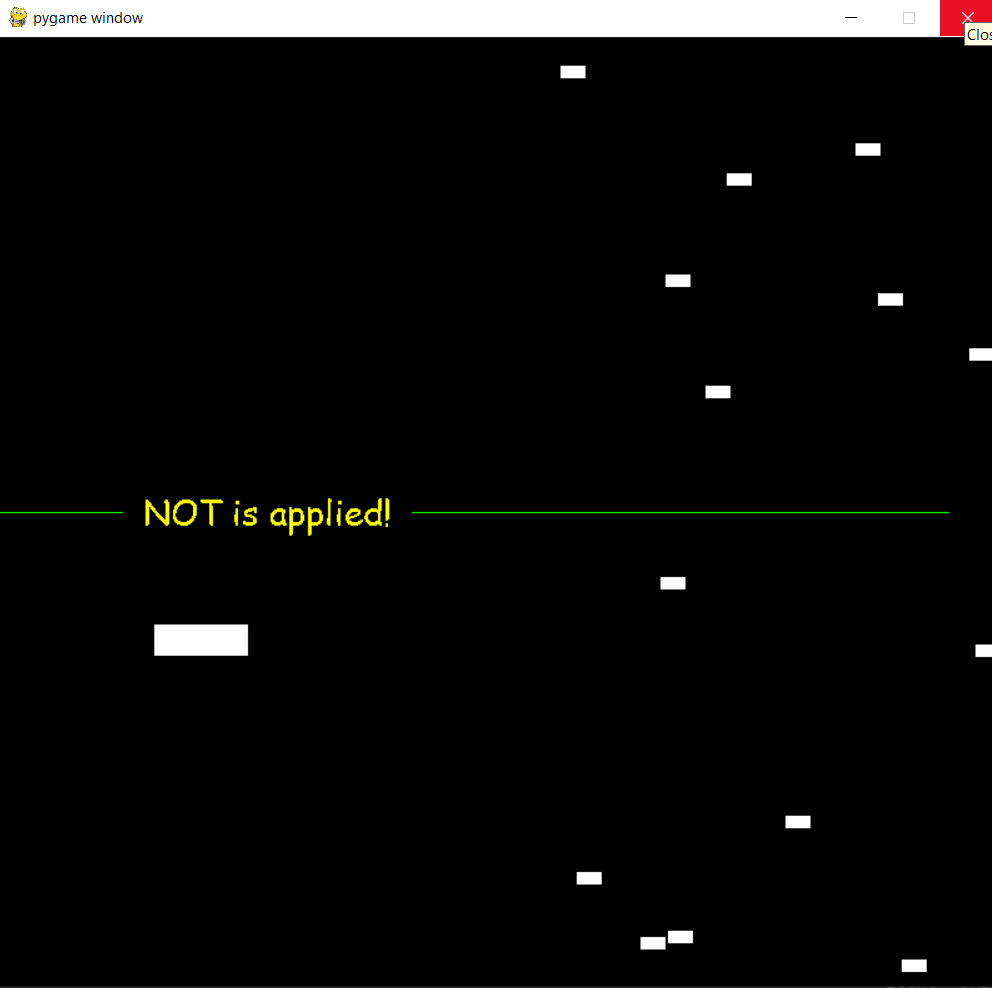
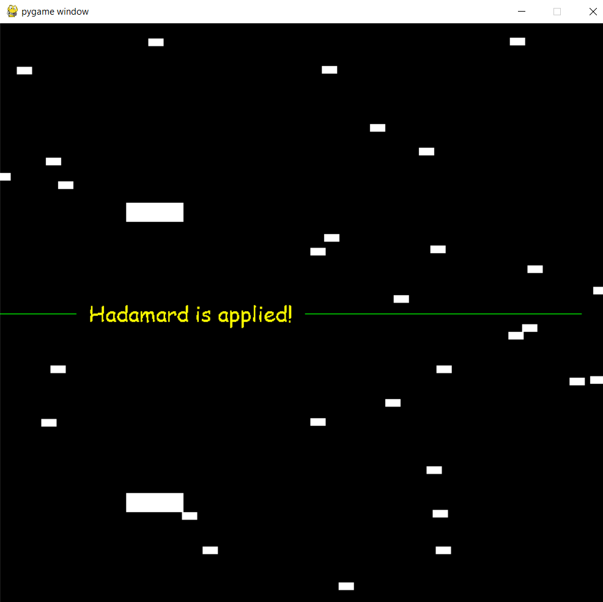
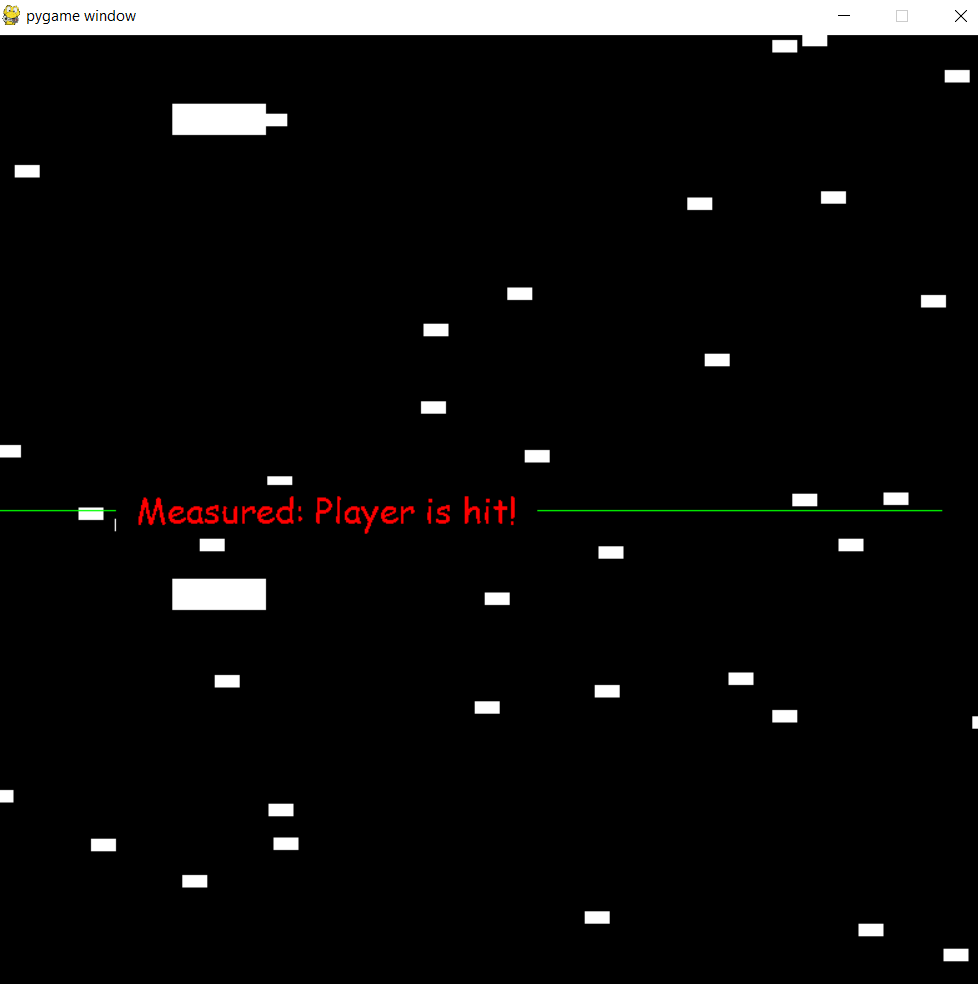

We will develop a quantum game but keep it very simple to give enough room for building on top of it.
Let's check it together first!
Here we discuss its details and features.
Two screens
We will have two screens referring to the states |0〉 and |1〉.
So, it might be helpful to define the half of heigth as a new constant variable.
HALF_HEIGHT = SCREEN_HEIGHT // 2
We draw a line between two screens.
# draw a line on the screen with specified color and starting & ending coordinates, from (x1,y1) to (x2,y2)
pygame.draw.line(screen, (0, 255, 0), (0, HALF_HEIGHT), (SCREEN_WIDTH, HALF_HEIGHT))
Restrict player within its screen
A photonic ship can be in up or down screen, but, it should not leave its screen while classical.
In my code, I defined "allowable_top" and "allowable_bottom" variables for the player to make calculations easily.
After applying NOT operator, our photonic ship jumps into the other screen with the same position. So, we should keep the track of the screen that the photonic ship is in.
We can use a variable to keep the screen of the player. Alternatively, we can check if "top" value of the player is in the up screen or down screen.
Remark that the following variables can be read and set:
player.rect.left
player.rect.top
Accessing global variable
To access a global variable locally (e.g., within a method), we should explicitly define this variable locally by using keyword "global":
global_variable = 45
def my_method():
global global_variable
...
Otherwise, we can get an error or use incorrect variables.
Superposition of the player
After applying HADAMARD operator, the photonic ship enters into a superpostion: Two photonic ships appear at the same positions of both screen.
Thus, we should create another player and position it accordingly.

Quantum world
While in superpostion, our photonic ship do not move!
Instead, the enemies move up and down with the up and down arrow keys, respectively.
The previous enemy speed interval might be too challenging while playing, and so, we can limit the max speed.
In my code, I defined "SPEED_MIN = 5" & "SPEED_MAX = 10".
Measurement
While in superposition, any enemy hitting the player in one of the screen forces the photonic ship to be measured.
Thus, our photonic ship collapses into one of the screen with the equal probablity.
In the scenario above, from which screen our photonic ship will continue?
In the scenario above, the photonic ship is hit!
Quantum operators
Quantum operators are applied randomly while the game is ongoing.
In the game loop, for example, we pick a number between 0 and 300:
Remark that, while in a superposition, there is no sense to apply NOT operator.
On the other hand, while in a superposition, a second HADAMARD can be applied, and so, the ship becomes classical and returns the position just before the first HADAMARD.
In my code, I defined "player" and "twin_player" when entering a superposition to keep their tracks easily.
Screen messages
It will be helpful to inform the player when a quantum operator or a measurement is applied.
It will also be helpful to show these messages for example for one second before the next frame.
You may use different colors for different type of messages.
Possible extensions/modifications
Let's discuss possible extensions and modifications to make the game more interesting and playable.
Send your final game to publish
Feel free to share your final version or GitHub repository link for publication on the event page by emailing "abuzer at lu dot lv"..